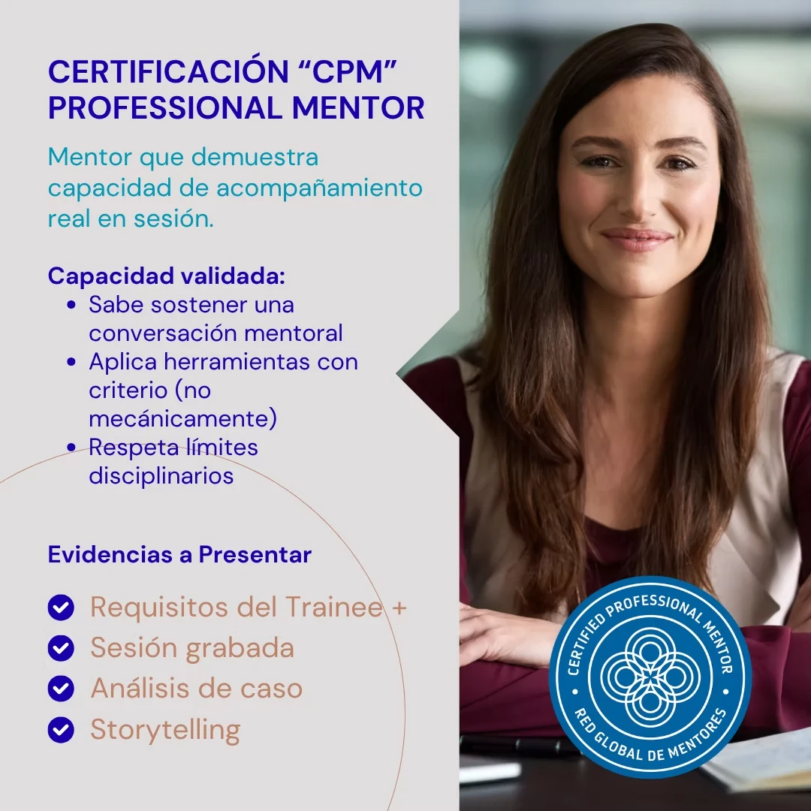
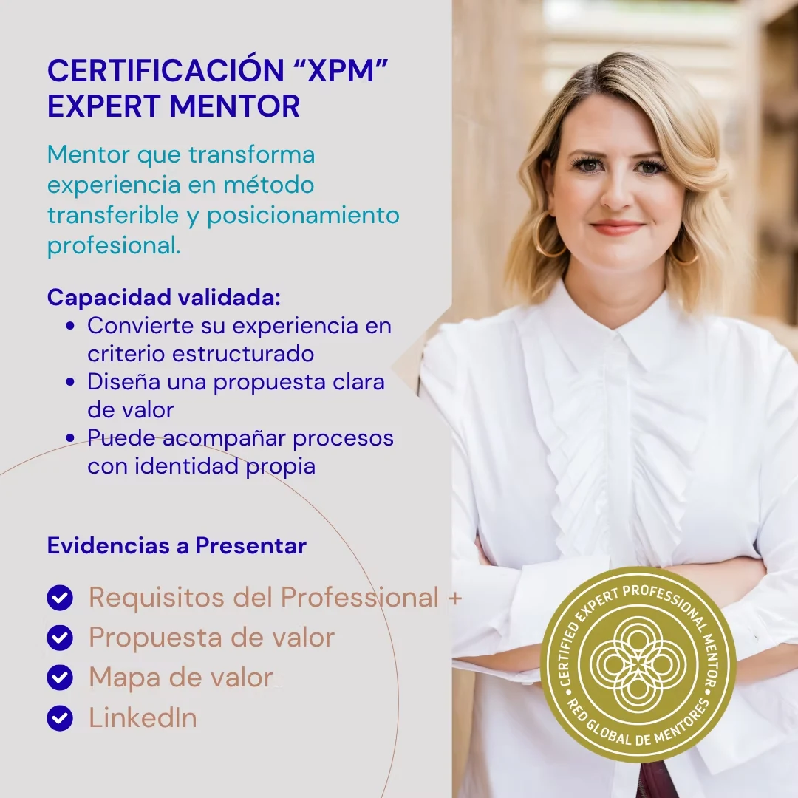

CTM
CTMTrainee Mentor
Para aceder ao processo de certificação, o candidato deverá ter concluído previamente um dos programas formativos chancelados pela Academia Global RGM, tais como:
- Programa Integral da Mentoria, lecionado em parceria com Universidades certificadas pela Academia Global RGM.
Só depois de percorrida esta etapa formativa será possível iniciar o processo, no qual será avaliada a compreensão concetual da mentoria como disciplina, os seus fundamentos, limites e diferenças em relação a outras práticas de acompanhamento.
Taxa de inscrição na certificação: USD 150
Certificar-me

CPMProfessional Mentor
Para aceder ao processo de certificação, o candidato deverá ter concluído previamente um dos programas formativos chancelados pela Academia Global RGM, tais como:
- Programa Integral da Mentoria, lecionado em parceria com Universidades certificadas pela Academia Global RGM.
- Programa Intermédio da Mentoria, desenvolvido por Centros de Formação certificados pela Academia Global RGM.
- Programa Intensivo da Mentoria, disponível na plataforma oficial de e-Learning da Academia Global RGM.
Só depois de percorrida esta etapa formativa será possível iniciar o processo, no qual será avaliada a capacidade de exercer a mentoria em sessão, com critério, clareza de papel e responsabilidade profissional.
Taxa de inscrição na certificação: USD 450
USD 300 se já possui a certificação anterior
Certificar-me

XPMExpert Mentor
Para aceder ao processo de certificação, o candidato deverá ter concluído previamente um dos programas formativos chancelados pela Academia Global RGM, tais como:
- Programa Integral da Mentoria, lecionado em parceria com Universidades certificadas pela Academia Global RGM.
- Programa Intermédio da Mentoria, desenvolvido por Centros de Formação certificados pela Academia Global RGM.
- Programa Intensivo da Mentoria, disponível na plataforma oficial de e-Learning da Academia Global RGM.
Só depois de percorrida esta etapa formativa será possível iniciar o processo, no qual será avaliada a capacidade de transformar experiência em sabedoria estruturada, aplicável e transferível a outros.
Taxa de inscrição na certificação: USD 950
USD 500 se já possui a certificação anterior
Certificar-me